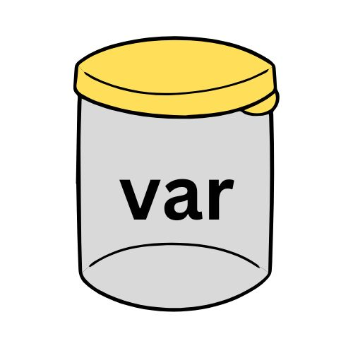
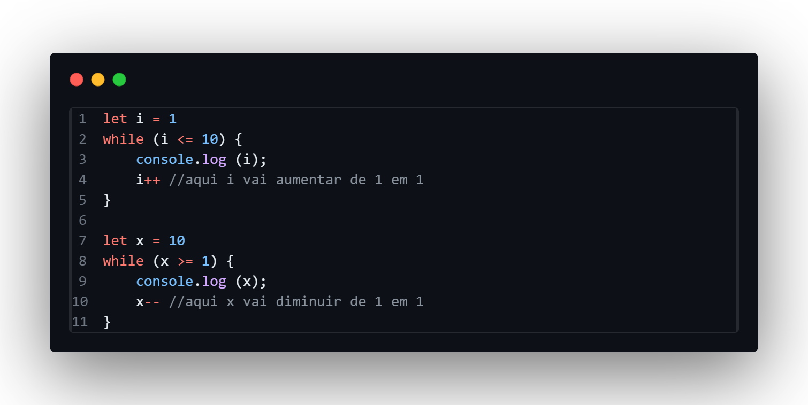
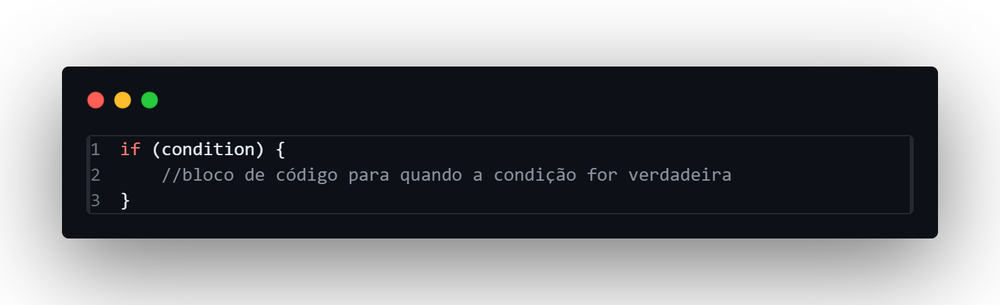
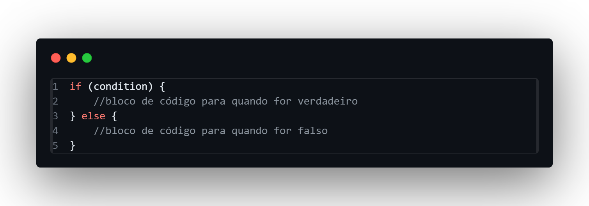
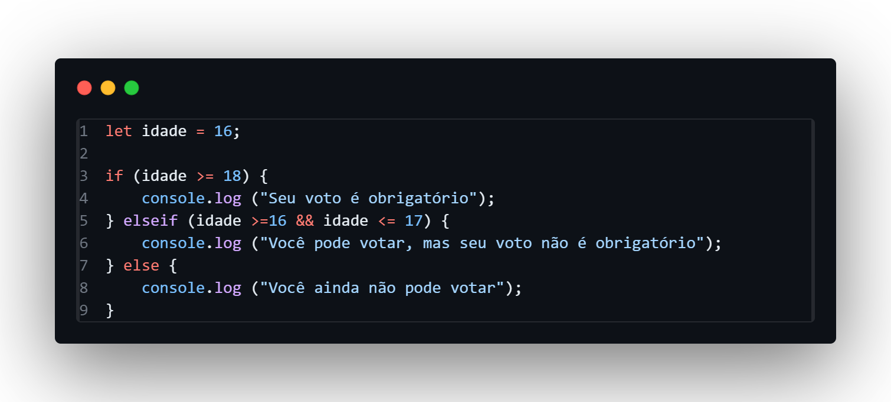
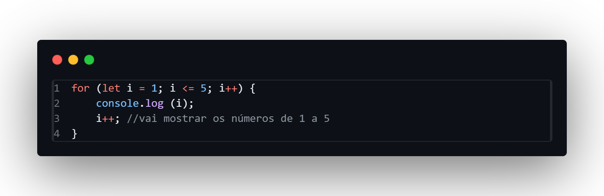
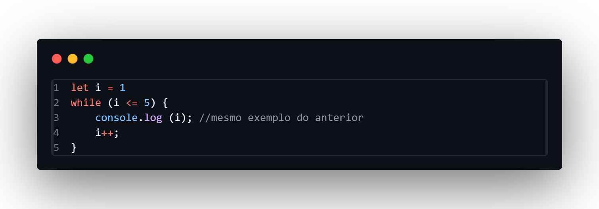
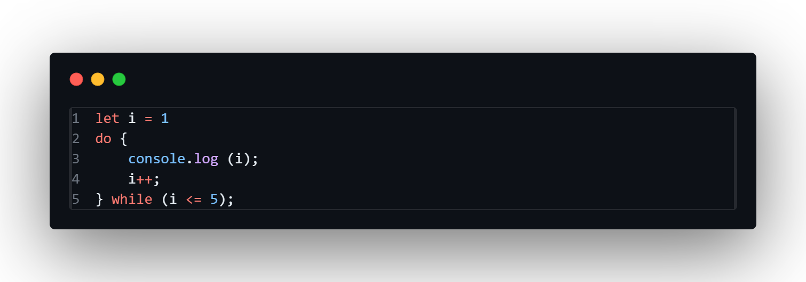

Podemos explicar as variáveis como "recipientes" para guardar dados, que podem ser letras, números e até mesmo funções para utilizarmos no código. Nós a usamos para armazenar e manipular dados de forma dinâmica, tornando nosso código mais legível e organizado. Essas variáveis podem ser globais - em que todo o código pode acessar o valor da variável - ou locais - em que apenas um bloco de código consegue acessar esse valor (logo mais você entenderá o que é bloco de código).
~ Existem três tipos de variáveis possíveis em JavaScript:
Esse foi o primeiro tipo de variável disponível para a linguagem, e hoje em dia é pouco utilizado. Nesse tipo de variável os dados podem variar de acordo com o que o programador quiser colocar.
Tipo mais comum de variável, funciona do mesmo jeito do "var", porém a única diferença é que os dados armazenados só podem ser acessados após a declaração da variável let, o que poderia não ocorrer com o "var".
Tipo de variável em que os dados armazenados nela não são mais mutáveis a partir do momento em que você os declarou.
No momento em que você atribui dados à variável, automaticamente esses dados terão um tipo definido de dado. Os principais tipos são:
Tipo de dado que se refere à números inteiros; quando são decimais, dizemos que são float ou double;
Se refere à uma cadeia de caracteres, ou seja, um conjunto de letras e números;
Dados que são verdadeiros (true) ou falsos (false).
É uma estrutura que pode armazenar vários dados em uma única variável, organizados em uma sequência ordenada.
É um bloco de código criado para fazer uma tarefa específica definida pelo desenvolvedor.
Os operadores são símbolos utilizados para realizar operações matemáticas, lógicas (como nas estruturas condicionais), atribuições de valores, entre outros.
Os principais operadores em JavaScript podem se separar em 4 categorias:
- São operadores utilizados nas estruturas de repetição (vai ser explicado mais pra frente), em que aumentam ou diminuem o valor numérico das variáveis de 1 em 1.

Essas estruturas são utilizadas para que um programa rode um bloco de código de acordo com uma condição estabelecida.
Em JavaScript, as principais estruturas condicionais são if/else e elseif.
É utilizado para verificar se uma condição for verdadeira. Se ela for verdadeira - if (condição) = true -, vai executar o bloco de código determinado.
Vem em conjunto com o if e é utilizado quando a condição determinada for falsa, para o programa executar outro bloco de código que for descrito.
É utilizado quando há mais possibilidades de condição fora do if/else, como no exemplo abaixo:
São estruturas que repetem um bloco de código enquanto uma condição for verdadeira. Em JavaScript, há três principais estruturas de repetição:
É utilizado quando definimos o número de repetições para o bloco de código. Possui três partes principais: a definição da variável, a limite de repetições do código e o incremento.
É utilizado quando não é certa a quantidade de repetições do código, mas há uma condição que deve ser verdadeira para que o código repita.
Funciona do mesmo jeito que o while, mas o código é executado antes de verificar a condição.
